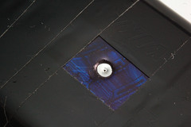
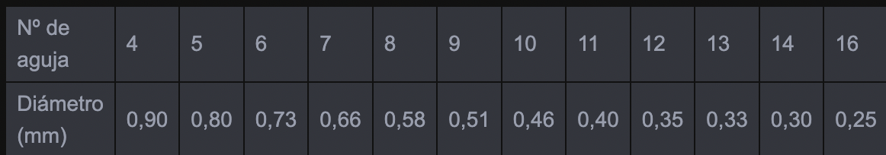

¿Qué es un estenopo?
Una vez superada la incredulidad que despierta ver fotografías obtenidas con cámaras artesanales, la siguiente pregunta que recibo es: “¿Qué es un estenopo?”

En una primera aproximación podríamos decir que el estenopo es ese pequeño agujero realizado casi siempre en aluminio que permite el ingreso de luz y forma las imágenes en nuestras cámaras estenopeicas.
Se podría definir a este pequeño agujero de latón como un “disco de aluminio con un pequeño orificio en el centro que hace las veces de objetivo de las cámaras fotográficas”. El estenopo, caracterizado por su profundidad de campo infinita, es el fundamento de la fotografía estenopeica.
El estenopo no focaliza la imagen como la lente, en realidad funciona como un filtro que limita la cantidad de luz que llega al material fotosensible (papel o film). Los rayos luminosos dan lugar a un cono de luz que crea un circulo de luninosoy no un punto.
Para obtener imágenes totalmente nítidas, el estenopo “ideal” debería permitir el paso de un único rayo lumínico procedente de cada punto del objeto.
Existen varias formulas para calcular el tamaño óptimo del estenopo. Les ofrezco una calculadora para que puedan realizar sus cálculos pero si no tienen la posibilidad de estar conectados cuando construyan sus cámaras pueden simplemente recordar esta fórmula:
Diámetro = √ 0.0016 x Distancia Focal (en mm)
Es decir: la raíz cuadrada de 0.0016 x la distancia entre el estenopo y el material fotosensible.
Verán que el diámetro es extremadamente pequeño la mayoría de las veces inferior a 0.50mm Una de las formas mas habituales en que se realiza este estenopo es con una aguja de coser (de ahí deriva su nombre en inglés pinhole), que vienen numeradas y en distintas medidas de acuerdo a la siguiente escala:

Tengan en cuenta que un estenopo demasiado grande dejará pasar mucha luz, el tiempo de exposición será menor pero perderemos definición; por el contrario, un estenopo demasiado pequeño nos dará buena definición pero los tiempos de exposición serán muy largos, la formula mencionada anteriormente tiene en cuenta estas dos situaciones y es por eso que la indicada para obtener una buena definición en imagen con el tiempo adecuado de exposición.